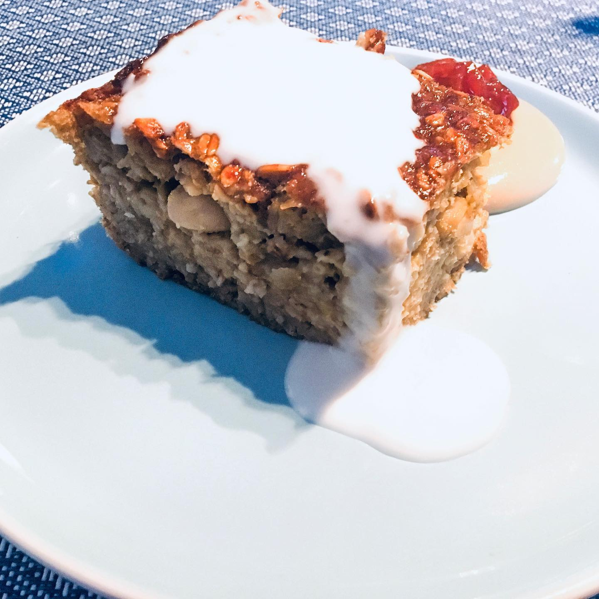

Ovocný chlebíček podľa @myway.loseweight — Normy Jedál
🥮Ovocný chlebíček
Dobré jako snídaně, s jogurtem, nebo samotný. Stejně dobré i jako dezert. Dětem bude chutnat 100%. Nejlíp chutná druhý den zastudena.
🥮Suroviny:
🌾2 hrnky ovesných bezlepkových vloček
🥭1 mango
🍌4 banány
ovoce, které mám zrovna doma-já měla ananas🍍
🥮Postup:
Troubu zapnu na 180. Mango a banány rozmixuji na smoothie a smíchám dohromady s vločkami a nakrájeným ananasem. Nechám odležet po dobu předehřívání trouby (15-30 minut). Mezitím vymažu pekáček kouskem kokosového oleje. Troubu stáhnu na 170 a šup tam s tím cca na 30-40minut.
Tadá✨
#ovocnychlebicek #ovocnykolac #ovocnydezert #ovesnychlebicek #ovesnydezert #ovesnykolac #bezcukru #bezlepku #veqan #veganskychlebicek #cukrfree #glutenfree #fitchlebicek #prodeti #zdravydezert #zdravemlsani #zdraveprodeti #zdravychlebicek #zdraverecepty #veganskerecepty #govegan #hubnuti #hubnu #hubnutí #hubnutipoporodu #recepty #ovesnevlocky #fitmum #fitvegan #zdravyvegan